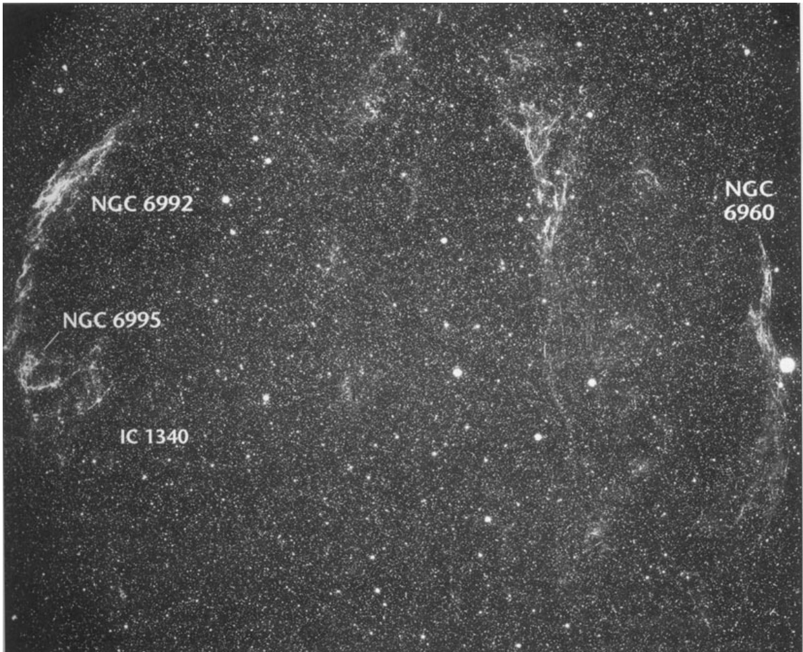

网状星云 · Network Nebula (NGC 6992)
目录
简介 Introduction
The Cygnus Loop supernova remnant stretches across 3° of the summer sky—a cosmic scar left by a stellar explosion approximately 10,000 years ago. Among its most spectacular segments lies NGC 6992, the eastern portion of what we call the Network Nebula or Bridal Veil Nebula. This delicate lacework of glowing gas represents the shredded remains of a massive star that ended its life in a spectacular supernova blast, now expanding outward at nearly 100 kilometers per second.
天鹅座超新星遗迹环横跨夏季天幕约3°的范围——这是一道由大约一万年前恒星爆炸留下的宇宙伤痕。在其最壮丽的片段中，NGC 6992赫然在目，也就是我们所说的网状星云或新娘面纱星云的东部区域。这片由发光气体构成的精致蕾丝结构，是一颗大质量恒星在超新星爆发中毁灭后残留的碎片，如今正以近每秒100公里的速度向外膨胀扩张。
"Remarkable, extremely faint, extremely large, extremely extended, extremely irregular figure, bifurcated."
“显著特征为极其暗弱、极其庞大、延展度极高、形态极不规则且呈现分叉结构。”
观测参数 Parameters
| 参数 / Parameter | 值 / Value |
|---|---|
| 类型 / Type | 超新星遗迹 / Supernova Remnant |
| 星座 / Constellation | 天鹅座 / Cygnus |
| 赤经 / Right Ascension | 20h 56.4m |
| 赤纬 / Declination | +31° 43' |
| 视星等 / Magnitude | 7.5 (O'Meara) |
| 视直径 / Angular Size | 60' × 8' |
| 距离 / Distance | ~2,500 光年 / ~2,500 light-years |
| 发现者 / Discoverer | 威廉·赫歇尔 / William Herschel |
| 发现年份 / Discovery Year | 1784 |
历史回顾 Historical Notes
When William Herschel turned his telescope toward this region on the evening of September 5, 1784, he could hardly have imagined the cosmic spectacle he was witnessing. His 20-foot reflector revealed what he meticulously recorded as "branching nebulosity extending in R.A. near 1°52' and in Polar Distance 52'." But it was the eastern portion that particularly captured his attention.
当威廉·赫歇尔在1784年9月5日夜晚将他的望远镜对准这片天区时，他几乎无法想象自己正在见证怎样的宇宙奇观。他那架20英尺反射镜揭示的景象，被他一丝不苟地记录为"分叉状星云结构在赤经方向延伸近1°52'，极距方向延伸52'"。但东部区域尤其引起了他的关注。
"The following [eastern] part divides into several streams uniting again towards the south."
“其东侧部分分裂为多股流束，向南方向重新汇合。”
What Herschel glimpsed was the aftermath of one of the most violent events in the universe—a supernova explosion whose light had already traveled 2,500 years to reach Earth by the time of his observation. Today, we understand that NGC 6992 is part of a vast shell of ionized hydrogen and helium, shocked and heated by the expanding blast wave from that ancient cataclysm. The nebula's characteristic filamentary structure arises from interactions between the supernova ejecta and the surrounding interstellar medium.
赫歇尔所窥见的，正是宇宙中最剧烈的暴力事件之一的后果——一颗超新星的爆发。当他的观测发生时，那道闪光已经穿越2,500光年的距离抵达地球。如今我们明白，NGC 6992是一片由电离氢和氦构成的巨大壳层，被那场远古灾难的膨胀冲击波加热并震荡。星云独特的丝状结构源于超新星抛射物与周围星际介质的相互作用。
The General Catalogue and its New General Catalogue extension described NGC 6992 as both "faint, extremely large, nebula and stars in groups" and further characterized it as possessing an "extremely irregular figure, bifurcated." These technical observations capture only the barest outline of the nebula's ethereal beauty—a beauty that rewards patient observers with telescopic views unlike anything else in the summer sky.
总星表及其新总星表的增补部分将NGC 6992描述为"暗淡、极其庞大的星云及成团分布的恒星群"，并进一步将其特征概括为"形态极不规则且呈现分叉结构"。这些技术性的观测记录仅仅勾勒出这团星云空灵之美的最粗略轮廓——而这种美，只有耐心的观测者用望远镜凝视时才能领略，那是夏季天空中其他任何天体都无法比拟的景象。

观测体验 Observing Experience
Through an 8-inch telescope under a moonless sky far from city lights, NGC 6992 reveals itself as a hauntingly beautiful arc of luminescent wisps. The eastern segment, NGC 6992, spans nearly a full degree of sky—roughly twice the apparent diameter of the full Moon—yet its extreme faintness demands patience and dark-adapted vision. Low magnification works best, allowing the eye to sweep across the entire filamentary structure without losing it to the tunnel vision of higher powers.
在一轮明月之外、远离城市灯火的无月之夜，用8英寸望远镜观测，NGC 6992会以一道令人难忘的美丽弧形发光细丝呈现自己。东部区域NGC 6992横跨近1°的天空——大约是满月视直径的两倍——然而其极端暗弱的特性要求观测者保持耐心并让眼睛充分暗适应。低倍放大最为理想，它让眼睛能够扫过整个丝状结构，而不会因高倍导致的视野狭窄而丢失目标。
The visual impact defies simple description. Imagine tracing a gossamer thread of starlight through the darkness, catching glimpses of structure that seems to shift and shimmer as you observe. Hydrogen-alpha filters dramatically transform the view, boosting the nebula's contrast until it seems to float in three-dimensional space against the black velvet of the interstellar void. Skilled observers report perceiving individual filaments as distinct entities—delicate hairs of light curled and intertwined in patterns that speak of chaos transformed into terrible beauty.
视觉冲击难以简单描述。想象你在黑暗中追踪一条如蛛丝般纤细的星光线，捕捉着似乎随着观测而变化闪烁的结构。氢-alpha滤镜会戏剧性地改变视野，大幅提升星云对比度，直到它仿佛漂浮在星际虚空的黑丝绒般背景上的立体空间中。经验丰富的观测者报告说，他们能感知到个别细丝作为独立实体存在——那些卷曲交织的纤细发光丝线，其图案诉说着混沌被转化为壮丽之美。
Photographically, NGC 6992 rewards long exposures with breathtaking complexity—a tapestry woven from threads of ionized oxygen (rendered in blue-green hues) and hydrogen (appearing in rich reds). But visual observers need not despair; even modest equipment reveals enough structure to understand why this object has captivated stargazers since Herschel's first glimpse over two centuries ago.
在摄影领域，NGC 6992以令人叹为观止的复杂性回报长时间的曝光——一幅由电离氧（呈现蓝绿色调）和氢（呈现浓郁红色）丝线编织的织锦。但视觉观测者无需沮丧；即便是普通的设备也足以揭示足够的结构，让人理解为何这个天体自两个多世纪前赫歇尔首次窥见以来，就一直令星空观测者心醉神迷。
As your eye adjusts to the darkness and the nebula's ghostly outline emerges from the star-rich fields of Cygnus, you cannot
🔒 受限于篇幅，本文仅展示部分样章。O'Meara 先生完整的观测手记、实测数据及未公开的独家配图，请参阅原著双语典藏版。
👉 立即在闲鱼获取《DEEP-SKY COMPANIONS》中英双语高清典藏版